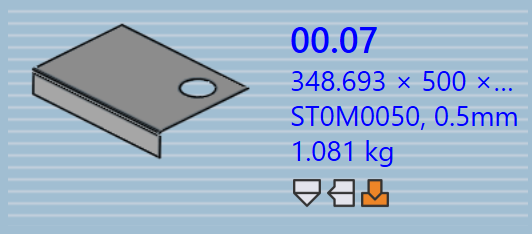

Delpanel
Dette afsnit forklarer delrelaterede handlinger såsom Re-import, Re-tool, Rename, Export outputs osv., der bruges til at håndtere delinstanser.

|
|
Re-import
-
Højreklik på en vilkårlig del og klik på Re-import….
-
Alle valgte deltilklargøringsinstanser på tværs af alle maskiner ryddes inklusive auto-klargjorte og manuelt klargjorte instanser.
-
Eksisterende outputfiler (CAD, Bend og Cut) fjernes.
-
Dele importeres igen, og ny CAD-validering og klargøring anvendes for alle maskiner.
-
Nye outputfiler oprettes baseret på det opdaterede klargøringsresultat.
Re-tool
-
Højreklik på en vilkårlig del og klik på Re-tool….
-
Alle maskiner er afkrydset som standard og grupperet som Laser, Punch, Panel og Press brake.
-
Klik på OK for at fortsætte. Dette fjerner både auto-klargjorte og manuelt klargjorte instanser for de valgte maskiner og sletter relaterede outputfiler.
-
Når Retain existing outputs-afkrydsningsfeltet er valgt, genklargøres kun dele, hvis outputs blev fjernet tidligere, andre outputs forbliver urørte. Hvis ikke afkrydset, fjernes alle outputfiler for valgte maskiner og regenereres under genklargøring.
|
Rename
Dette afsnit forklarer, hvordan du omdøber en eller flere dele i TruSmartCAM.
-
Højreklik på delen og klik på Rename….
-
En omdøbningsbekræftelsesdialog vises, der viser det aktuelle delnavn.
-
Angiv det nye navn og klik på flueben ✓-ikonet for at bekræfte, eller klik på kryds ✗-ikonet for at annullere omdøbningsoperationen.
-
For at omdøbe flere dele skal du vælge alle nødvendige dele, derefter højreklikke på en af dem og klikke på Rename….
-
En bekræftelsesdialog vises med det samlede antal valgte dele.
-
For hver del skal du angive det nye navn og klikke på flueben ✓-ikonet for at bekræfte én efter én.
-
Hvis en del blev valgt ved en fejl, klik på kryds ✗-ikonet for at annullere. Alternativt kan du højreklikke på delen og klikke på Cancel Rename for at springe omdøbning over.
Export outputs
Denne mulighed eksporterer deloutputtet til den destination, der er konfigureret i Factory Settings. (Se Bukkeindstillinger og Skæreindstillinger)
Outputplaceringen defineres separat for Bend, Fold og Cut i deres respektive outputindstillinger. Alle klargøringer tilknyttet buk-, fals- og skæreoperationer eksporteres for hele delen.
| De eksporterede filer afhænger af operationstypen. For Bend- og Fold-operationer genereres NC-filer og rapporter. For Cut- og Punch- operationer eksporteres kun delfilerne. |
Deltildeling af materiale
Dele med status Material not assigned skal opdateres før yderligere behandling. Trinene nedenfor forklarer, hvordan du tildeler materiale.
-
Højreklik på delen, der viser status Material not assigned og vælg Assign Material….
-
Assign Material-vinduet åbnes.
-
Dialogen har fire sektioner:
-
Suggestions - Foreslår automatisk rå- materialer baseret på den importerede dels tykkelse.
-
All Materials - Viser alle materialetyper defineret i TruSmartCAM.
-
All Raw-Materials - Viser alle råmaterialer tilgængelige i systemet.
-
Used Raw-Materials - Viser de senest brugte råmaterialer til hurtig adgang.
-
-
Du kan bruge Search-feltet øverst til hurtigt at finde materialer. For eksempel, skriv "steel" for at vise alle matchende materialer på tværs af de tre sektioner.
-
Fra den filtrerede liste, vælg det ønskede materiale (f.eks. Steel-25) fra Raw-Material-listen.
-
Det valgte materiale vil blive tildelt delen.
Rolling direction
Rolling direction henviser til orienteringen af fiberretningen i en del, hvilket kan påvirke, hvordan delen skæres og behandles. Denne mulighed giver dig mulighed for at angive Rolling direction for en del i Part Library. Baseret på den valgte retning placeres delen i den korrekte orientering til skæring på de tilgængelige maskiner.
-
Højreklik på en vilkårlig delflise i Part Library eller Job-vinduet.
-
Vælg den foretrukne valseretning:
-
None
-
Horizontal
-
Vertical
-
-
Delen genklargøres automatisk for alle tilgængelige skæremaskiner baseret på den valgte valseretning.
-
Delflisen vil vise den valgte valseretning som vist nedenfor:

